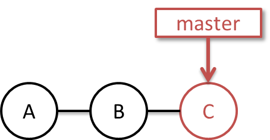
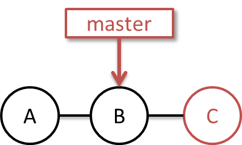
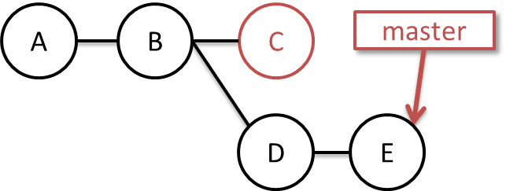

任意のリビジョンに戻す。
任意のリビジョンに戻すには？
前提：共有リポジトリ（origin）からcloneされている
コマンド：git reset --hard ハッシュ値
前提：共有リポジトリ（origin）からcloneされている
前提：取り消したいコミットが直近のものである
補足：バージョンツリー上の動き
1. 以下のCのコミットを取り消したい。

2. resetコマンドにてCの直前の状態へ戻す。

3. 戻した状態をベースとしてコミットしていけばよい。

Cのコミットは誰からも参照されないため、pushで公開する際は「なかったこと」にされる。
このコミットは「git gc」コマンドにより削除できる。（参照されなくなって2週間で消されるので、2週間は残る※2週間もおそらく何かの設定。）